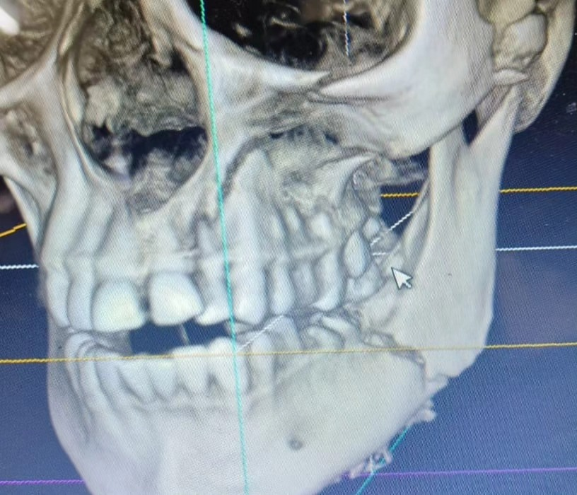
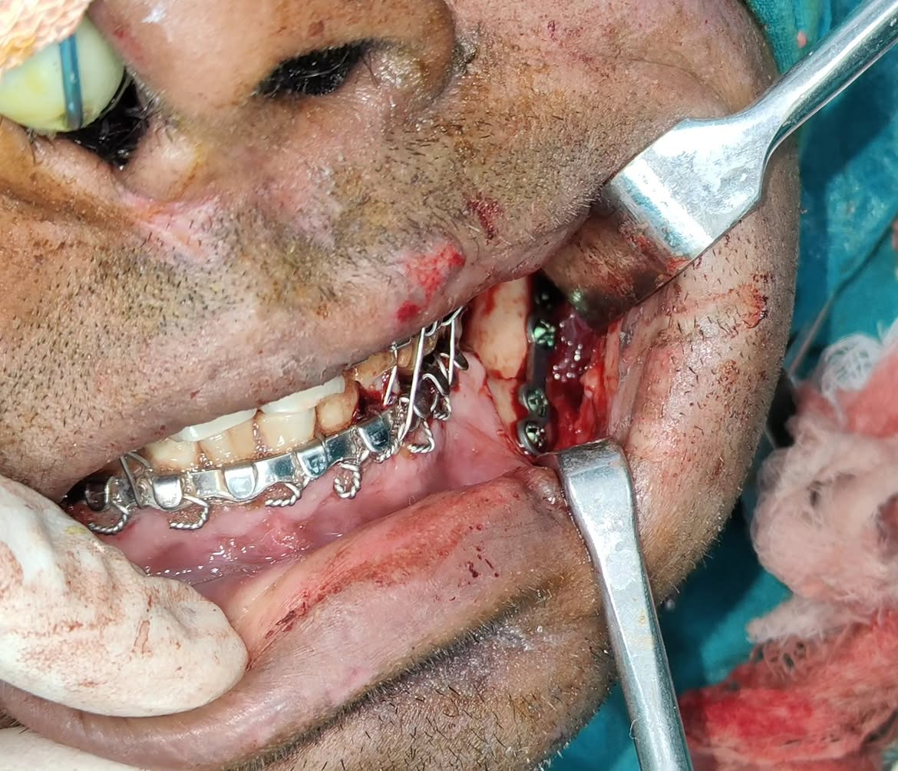
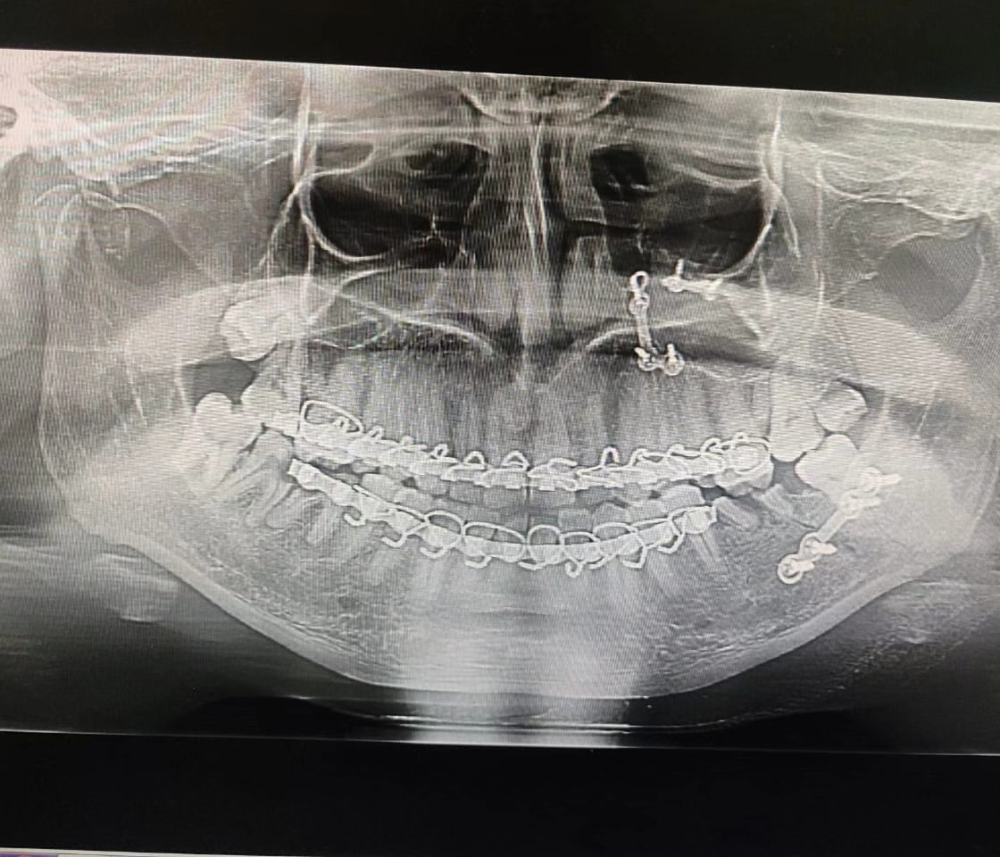

Case 01 · Trauma Diagnosis
The case
Case of trauma Diagnosis -fracture left body of mandible, Fracture left maxillary pyriform rim and buttress, Fracture left infraorbital rim.
The treatment
Treatment done-open reduction and internal fixation under general anesthesia Incision taken-infraorbital incision givem to expose left infraorbital rim, Vestibular incision given to expose left maxillary pyriform rim, Modified Ward's incision given to expose left body region.
The outcome
IMF done and occlusion achieved. Fixation done using miniplates and miniscrews. Case done


